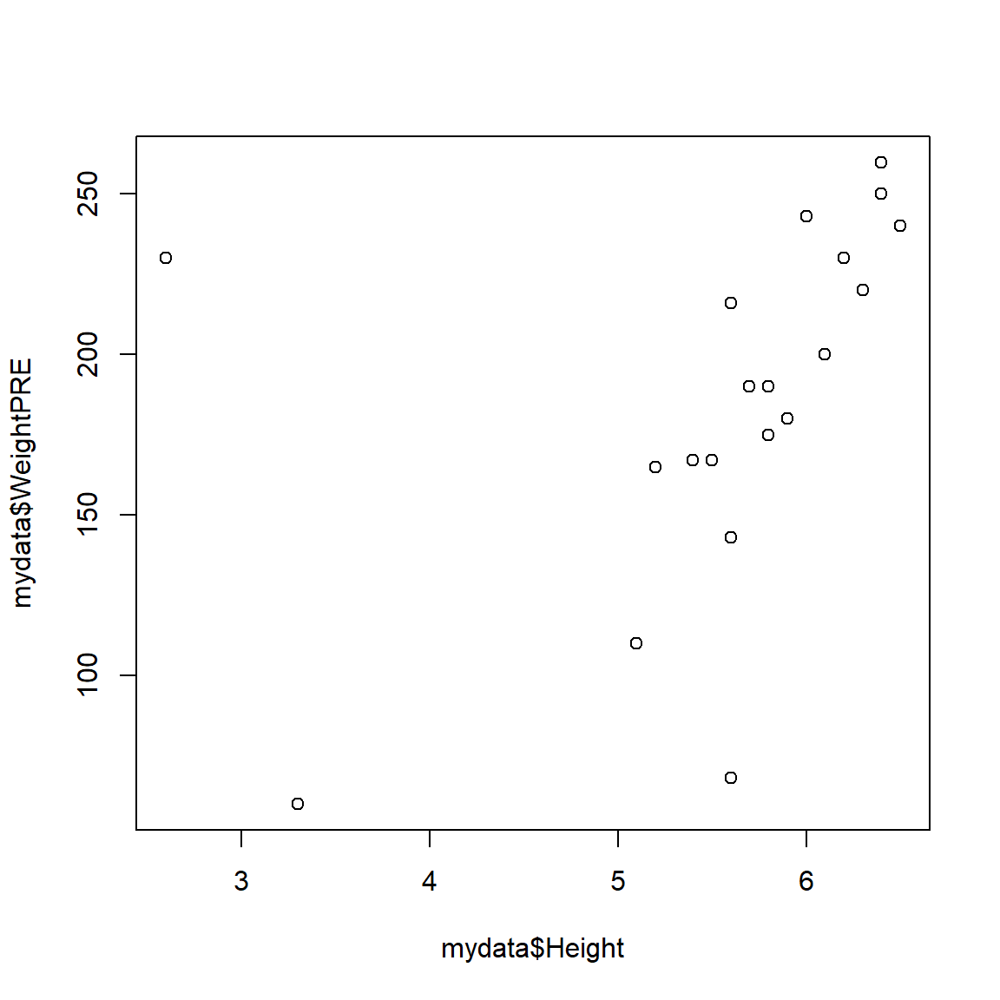
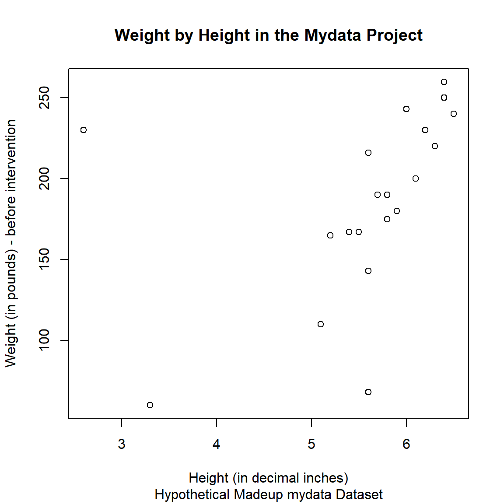
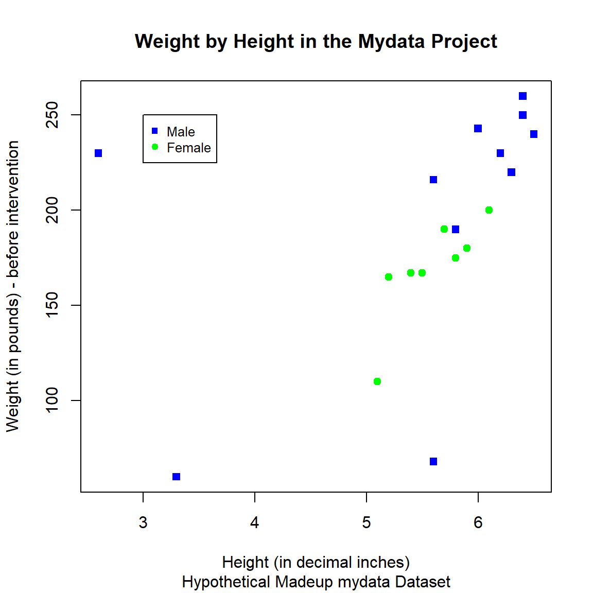

# load mydata
load(file = "mydata.RData")1.3.3: Data Visualization
(Asynchronous-Online)
Session Objectives
- To visualize data using different R packages.
Key points to cover:
- Introduce to ggplot2 and other R packages.
- Visualize one, two, or more variables at a time.
- Introduce other resources (e.g., books, blogs, or websites) trainees can refer to.
0. Prework - Before You Begin
A. Install packages
If you do not have them already, install the following packages from CRAN:
B. Open/create your RStudio project
Let’s start with the myfirstRproject RStudio project you created in Module 1.3.2 - part 1. If you have not yet created this myfirstRproject RStudio project, go ahead and create a new RStudio Project for this lesson. Feel free to name your project whatever you want, it does not need to be named myfirstRproject.
C. Create a new R script and load data into your computing session
At the end of Module 1.3.2 - part 6 you saved the mydata dataset in the mydata.RData R binary format.
Go ahead and create a new R script (
*.R) for this computing session. We did this already in Module 1.3.1 - part 3 - refer to this section to remember how to create a new R script.Put this code into your new R script (
*.R) to loadmydata.RDatainto your current computing session.
Data must/should be in your RStudio project
REMEMBER R/RStudio automatically looks in your current RStudio project folder for all files for your current computing session. So, make sure the mydata.RData file is in your current RStudio project myfirstRproject folder on your computer.
For a more detailed overview of RStudio projects:
D. Get Inspired!
- Get Inspired at The R Graph Gallery
- Also see the Top Curated R Graphs
- Also see Additional Resources - R Graphics
1. Base R graphical functions
The base R graphics package is very powerful on its own. As you saw in 1.3.1: Introduction to R and R Studio, we can make a simple 2-dimensional scatterplot with the plot() function.
Base R - Scatterplot
For example, let’s make a plot of Height on the X-axis (horizontal) and WeightPRE on the Y-axis (vertical) from the mydata dataset. Since we are using base R function, we have to use the $selector to identify the variables we want inside the mydata dataset.
Learn more about the plot() function and arguments by running help(plot, package = "graphics").
plot(x = mydata$Height,
y = mydata$WeightPRE)
The plot does look a little odd - this is due to some data errors in the mydata dataset. We will fix these below. But for now, you can “see” that these data may have some issues that need to be addressed. For example:
- There are 2 people with heights < 5 feet tall which may be suspect
- There are 2 people with a weight < 100 pounds which may be data entry errors or incorrect units
For now, let’s add some additional graphical elements:
- a better label for the x-axis
- a better label for the y-axis
- a title for the graph
- a subtitle for the graph
plot(x = mydata$Height,
y = mydata$WeightPRE,
xlab = "Height (in decimal inches)",
ylab = "Weight (in pounds) - before intervention",
main = "Weight by Height in the Mydata Project",
sub = "Hypothetical Madeup mydata Dataset")
And we could also add color and change the shapes - for example, let’s color and shape the points by GenderCoded, the numeric coding for gender where 1=Male, 2=Female.
Plot code inspiration
I pulled this code together from code examples at:
plot(x = mydata$Height,
y = mydata$WeightPRE,
col = c("blue", "green")[mydata$GenderCoded],
pch = c(15, 19)[mydata$GenderCoded],
xlab = "Height (in decimal inches)",
ylab = "Weight (in pounds) - before intervention",
main = "Weight by Height in the Mydata Project",
sub = "Hypothetical Madeup mydata Dataset")
The STHDA website on “R Base Graphs” has a nice walkthrough of using the base R graphics package to make really nice plots.
Base R - Histogram
As we noted above, let’s take a look at the distribution of the heights in the mydata dataset. There is a specific hist() function in the graphics package for making histograms, learn more by running help(hist, package = "graphics").
Notice that we can use some of the same arguments as we did above for plot().
hist(mydata$Height,
xlab = "Height (in decimal inches)",
col = "lightblue",
border = "black",
main = "Histogram of Heights",
sub = "Hypothetical Madeup mydata Dataset")
Colors available
There are 657 names colors immediately available to you from the built-in grDevices Base R package which works in conjunction with graphics. You can view the names of all of these colors by running colors(). You can also learn more at:
- https://www.sthda.com/english/wiki/colors-in-r#google_vignette
- https://r-graph-gallery.com/42-colors-names.html
- https://r-graph-gallery.com/ggplot2-color.html - which explains how colors can be specified using the built-in color names, but cal also be specified using RGB (red, green, blue) indexes or even Hexcodes for which there are many online tools like https://htmlcolorcodes.com/.
# list built-in colors
colors() [1] "white" "aliceblue" "antiquewhite"
[4] "antiquewhite1" "antiquewhite2" "antiquewhite3"
[7] "antiquewhite4" "aquamarine" "aquamarine1"
[10] "aquamarine2" "aquamarine3" "aquamarine4"
[13] "azure" "azure1" "azure2"
[16] "azure3" "azure4" "beige"
[19] "bisque" "bisque1" "bisque2"
[22] "bisque3" "bisque4" "black"
[25] "blanchedalmond" "blue" "blue1"
[28] "blue2" "blue3" "blue4"
[31] "blueviolet" "brown" "brown1"
[34] "brown2" "brown3" "brown4"
[37] "burlywood" "burlywood1" "burlywood2"
[40] "burlywood3" "burlywood4" "cadetblue"
[43] "cadetblue1" "cadetblue2" "cadetblue3"
[46] "cadetblue4" "chartreuse" "chartreuse1"
[49] "chartreuse2" "chartreuse3" "chartreuse4"
[52] "chocolate" "chocolate1" "chocolate2"
[55] "chocolate3" "chocolate4" "coral"
[58] "coral1" "coral2" "coral3"
[61] "coral4" "cornflowerblue" "cornsilk"
[64] "cornsilk1" "cornsilk2" "cornsilk3"
[67] "cornsilk4" "cyan" "cyan1"
[70] "cyan2" "cyan3" "cyan4"
[73] "darkblue" "darkcyan" "darkgoldenrod"
[76] "darkgoldenrod1" "darkgoldenrod2" "darkgoldenrod3"
[79] "darkgoldenrod4" "darkgray" "darkgreen"
[82] "darkgrey" "darkkhaki" "darkmagenta"
[85] "darkolivegreen" "darkolivegreen1" "darkolivegreen2"
[88] "darkolivegreen3" "darkolivegreen4" "darkorange"
[91] "darkorange1" "darkorange2" "darkorange3"
[94] "darkorange4" "darkorchid" "darkorchid1"
[97] "darkorchid2" "darkorchid3" "darkorchid4"
[100] "darkred" "darksalmon" "darkseagreen"
[103] "darkseagreen1" "darkseagreen2" "darkseagreen3"
[106] "darkseagreen4" "darkslateblue" "darkslategray"
[109] "darkslategray1" "darkslategray2" "darkslategray3"
[112] "darkslategray4" "darkslategrey" "darkturquoise"
[115] "darkviolet" "deeppink" "deeppink1"
[118] "deeppink2" "deeppink3" "deeppink4"
[121] "deepskyblue" "deepskyblue1" "deepskyblue2"
[124] "deepskyblue3" "deepskyblue4" "dimgray"
[127] "dimgrey" "dodgerblue" "dodgerblue1"
[130] "dodgerblue2" "dodgerblue3" "dodgerblue4"
[133] "firebrick" "firebrick1" "firebrick2"
[136] "firebrick3" "firebrick4" "floralwhite"
[139] "forestgreen" "gainsboro" "ghostwhite"
[142] "gold" "gold1" "gold2"
[145] "gold3" "gold4" "goldenrod"
[148] "goldenrod1" "goldenrod2" "goldenrod3"
[151] "goldenrod4" "gray" "gray0"
[154] "gray1" "gray2" "gray3"
[157] "gray4" "gray5" "gray6"
[160] "gray7" "gray8" "gray9"
[163] "gray10" "gray11" "gray12"
[166] "gray13" "gray14" "gray15"
[169] "gray16" "gray17" "gray18"
[172] "gray19" "gray20" "gray21"
[175] "gray22" "gray23" "gray24"
[178] "gray25" "gray26" "gray27"
[181] "gray28" "gray29" "gray30"
[184] "gray31" "gray32" "gray33"
[187] "gray34" "gray35" "gray36"
[190] "gray37" "gray38" "gray39"
[193] "gray40" "gray41" "gray42"
[196] "gray43" "gray44" "gray45"
[199] "gray46" "gray47" "gray48"
[202] "gray49" "gray50" "gray51"
[205] "gray52" "gray53" "gray54"
[208] "gray55" "gray56" "gray57"
[211] "gray58" "gray59" "gray60"
[214] "gray61" "gray62" "gray63"
[217] "gray64" "gray65" "gray66"
[220] "gray67" "gray68" "gray69"
[223] "gray70" "gray71" "gray72"
[226] "gray73" "gray74" "gray75"
[229] "gray76" "gray77" "gray78"
[232] "gray79" "gray80" "gray81"
[235] "gray82" "gray83" "gray84"
[238] "gray85" "gray86" "gray87"
[241] "gray88" "gray89" "gray90"
[244] "gray91" "gray92" "gray93"
[247] "gray94" "gray95" "gray96"
[250] "gray97" "gray98" "gray99"
[253] "gray100" "green" "green1"
[256] "green2" "green3" "green4"
[259] "greenyellow" "grey" "grey0"
[262] "grey1" "grey2" "grey3"
[265] "grey4" "grey5" "grey6"
[268] "grey7" "grey8" "grey9"
[271] "grey10" "grey11" "grey12"
[274] "grey13" "grey14" "grey15"
[277] "grey16" "grey17" "grey18"
[280] "grey19" "grey20" "grey21"
[283] "grey22" "grey23" "grey24"
[286] "grey25" "grey26" "grey27"
[289] "grey28" "grey29" "grey30"
[292] "grey31" "grey32" "grey33"
[295] "grey34" "grey35" "grey36"
[298] "grey37" "grey38" "grey39"
[301] "grey40" "grey41" "grey42"
[304] "grey43" "grey44" "grey45"
[307] "grey46" "grey47" "grey48"
[310] "grey49" "grey50" "grey51"
[313] "grey52" "grey53" "grey54"
[316] "grey55" "grey56" "grey57"
[319] "grey58" "grey59" "grey60"
[322] "grey61" "grey62" "grey63"
[325] "grey64" "grey65" "grey66"
[328] "grey67" "grey68" "grey69"
[331] "grey70" "grey71" "grey72"
[334] "grey73" "grey74" "grey75"
[337] "grey76" "grey77" "grey78"
[340] "grey79" "grey80" "grey81"
[343] "grey82" "grey83" "grey84"
[346] "grey85" "grey86" "grey87"
[349] "grey88" "grey89" "grey90"
[352] "grey91" "grey92" "grey93"
[355] "grey94" "grey95" "grey96"
[358] "grey97" "grey98" "grey99"
[361] "grey100" "honeydew" "honeydew1"
[364] "honeydew2" "honeydew3" "honeydew4"
[367] "hotpink" "hotpink1" "hotpink2"
[370] "hotpink3" "hotpink4" "indianred"
[373] "indianred1" "indianred2" "indianred3"
[376] "indianred4" "ivory" "ivory1"
[379] "ivory2" "ivory3" "ivory4"
[382] "khaki" "khaki1" "khaki2"
[385] "khaki3" "khaki4" "lavender"
[388] "lavenderblush" "lavenderblush1" "lavenderblush2"
[391] "lavenderblush3" "lavenderblush4" "lawngreen"
[394] "lemonchiffon" "lemonchiffon1" "lemonchiffon2"
[397] "lemonchiffon3" "lemonchiffon4" "lightblue"
[400] "lightblue1" "lightblue2" "lightblue3"
[403] "lightblue4" "lightcoral" "lightcyan"
[406] "lightcyan1" "lightcyan2" "lightcyan3"
[409] "lightcyan4" "lightgoldenrod" "lightgoldenrod1"
[412] "lightgoldenrod2" "lightgoldenrod3" "lightgoldenrod4"
[415] "lightgoldenrodyellow" "lightgray" "lightgreen"
[418] "lightgrey" "lightpink" "lightpink1"
[421] "lightpink2" "lightpink3" "lightpink4"
[424] "lightsalmon" "lightsalmon1" "lightsalmon2"
[427] "lightsalmon3" "lightsalmon4" "lightseagreen"
[430] "lightskyblue" "lightskyblue1" "lightskyblue2"
[433] "lightskyblue3" "lightskyblue4" "lightslateblue"
[436] "lightslategray" "lightslategrey" "lightsteelblue"
[439] "lightsteelblue1" "lightsteelblue2" "lightsteelblue3"
[442] "lightsteelblue4" "lightyellow" "lightyellow1"
[445] "lightyellow2" "lightyellow3" "lightyellow4"
[448] "limegreen" "linen" "magenta"
[451] "magenta1" "magenta2" "magenta3"
[454] "magenta4" "maroon" "maroon1"
[457] "maroon2" "maroon3" "maroon4"
[460] "mediumaquamarine" "mediumblue" "mediumorchid"
[463] "mediumorchid1" "mediumorchid2" "mediumorchid3"
[466] "mediumorchid4" "mediumpurple" "mediumpurple1"
[469] "mediumpurple2" "mediumpurple3" "mediumpurple4"
[472] "mediumseagreen" "mediumslateblue" "mediumspringgreen"
[475] "mediumturquoise" "mediumvioletred" "midnightblue"
[478] "mintcream" "mistyrose" "mistyrose1"
[481] "mistyrose2" "mistyrose3" "mistyrose4"
[484] "moccasin" "navajowhite" "navajowhite1"
[487] "navajowhite2" "navajowhite3" "navajowhite4"
[490] "navy" "navyblue" "oldlace"
[493] "olivedrab" "olivedrab1" "olivedrab2"
[496] "olivedrab3" "olivedrab4" "orange"
[499] "orange1" "orange2" "orange3"
[502] "orange4" "orangered" "orangered1"
[505] "orangered2" "orangered3" "orangered4"
[508] "orchid" "orchid1" "orchid2"
[511] "orchid3" "orchid4" "palegoldenrod"
[514] "palegreen" "palegreen1" "palegreen2"
[517] "palegreen3" "palegreen4" "paleturquoise"
[520] "paleturquoise1" "paleturquoise2" "paleturquoise3"
[523] "paleturquoise4" "palevioletred" "palevioletred1"
[526] "palevioletred2" "palevioletred3" "palevioletred4"
[529] "papayawhip" "peachpuff" "peachpuff1"
[532] "peachpuff2" "peachpuff3" "peachpuff4"
[535] "peru" "pink" "pink1"
[538] "pink2" "pink3" "pink4"
[541] "plum" "plum1" "plum2"
[544] "plum3" "plum4" "powderblue"
[547] "purple" "purple1" "purple2"
[550] "purple3" "purple4" "red"
[553] "red1" "red2" "red3"
[556] "red4" "rosybrown" "rosybrown1"
[559] "rosybrown2" "rosybrown3" "rosybrown4"
[562] "royalblue" "royalblue1" "royalblue2"
[565] "royalblue3" "royalblue4" "saddlebrown"
[568] "salmon" "salmon1" "salmon2"
[571] "salmon3" "salmon4" "sandybrown"
[574] "seagreen" "seagreen1" "seagreen2"
[577] "seagreen3" "seagreen4" "seashell"
[580] "seashell1" "seashell2" "seashell3"
[583] "seashell4" "sienna" "sienna1"
[586] "sienna2" "sienna3" "sienna4"
[589] "skyblue" "skyblue1" "skyblue2"
[592] "skyblue3" "skyblue4" "slateblue"
[595] "slateblue1" "slateblue2" "slateblue3"
[598] "slateblue4" "slategray" "slategray1"
[601] "slategray2" "slategray3" "slategray4"
[604] "slategrey" "snow" "snow1"
[607] "snow2" "snow3" "snow4"
[610] "springgreen" "springgreen1" "springgreen2"
[613] "springgreen3" "springgreen4" "steelblue"
[616] "steelblue1" "steelblue2" "steelblue3"
[619] "steelblue4" "tan" "tan1"
[622] "tan2" "tan3" "tan4"
[625] "thistle" "thistle1" "thistle2"
[628] "thistle3" "thistle4" "tomato"
[631] "tomato1" "tomato2" "tomato3"
[634] "tomato4" "turquoise" "turquoise1"
[637] "turquoise2" "turquoise3" "turquoise4"
[640] "violet" "violetred" "violetred1"
[643] "violetred2" "violetred3" "violetred4"
[646] "wheat" "wheat1" "wheat2"
[649] "wheat3" "wheat4" "whitesmoke"
[652] "yellow" "yellow1" "yellow2"
[655] "yellow3" "yellow4" "yellowgreen" Overlay a Density Curve
Statisticians often like seeing a histogram (for the frequencies or probability of each value for the variable in the dataset) with an overlaid density curve (which is “smoothed” line for these probabilities). Statistical software like SAS and SPSS make this really easy. However, in R, we need to think through the process to get this to work.
- First, we need to make the histogram using probabilities for the “bars” in the histogram instead of frequency counts.
- Second, we need to add a density line curve over the histogram “bars”.
See these online examples:
- https://r-charts.com/distribution/histogram-curves/
- https://www.datacamp.com/doc/r/histograms-and-density
- https://www.r-bloggers.com/2012/09/histogram-density-plot-combo-in-r/
# make histogram as we did above
# add freq = FALSE
hist(mydata$Height,
freq = FALSE,
xlab = "Height (in decimal inches)",
col = "lightblue",
border = "black",
main = "Histogram of Heights",
sub = "Hypothetical Madeup mydata Dataset")
# add density curve line
# add na.rm=TRUE to remove
# the missing values in Height
lines(density(mydata$Height, na.rm=TRUE),
col = "black")
Base R - Barchart
Base R - Boxplot
2. ggplot2 package
The ggplot2 package name starts with gg which stands for the “grammar of graphics” which is explained in the “ggplot2: Elegant Graphics for Data Analysis (3e)” Book.
Why is the package
ggplot2 and not ggplot?
Many people often ask Hadley Wickham (the developer of ggplot2) what happened to the first ggplot? Technically, there was a ggplot package and you can still view the ggplot archived package versions on CRAN which date back to 2006 with the last version posted in 2008. However, in 2007, Hadley redesigned the package and published the first version of ggplot2 (version 0.5.1) was posted on CRAN. So, ggplot2 is the package that has stayed in production and actively maintained for nearly 20 years!!
Given that ggplot2 has been actively maintained for nearly 20 years, it has become almost the defacto graphical standard for R graphics. If you take a look at the list of packages on CRAN that start with the letter “G”, as of this morning 01/28/2025 at 8:23 am EST, USA, there are 230 packages that start with gg - nearly all of these are compatible packages that extend the functionality or work in concert with the ggplot2 package.
ggplot2 - Scatterplot
ggplot2 - Histogram
ggplot2 - Barchart
ggplot2 - Boxplot
3. Get boilerplate code to start
R Gallery
R Graphics Cookbook
References
R Core Team. 2024. R: A Language and Environment for Statistical Computing. Vienna, Austria: R Foundation for Statistical Computing. https://www.R-project.org/.